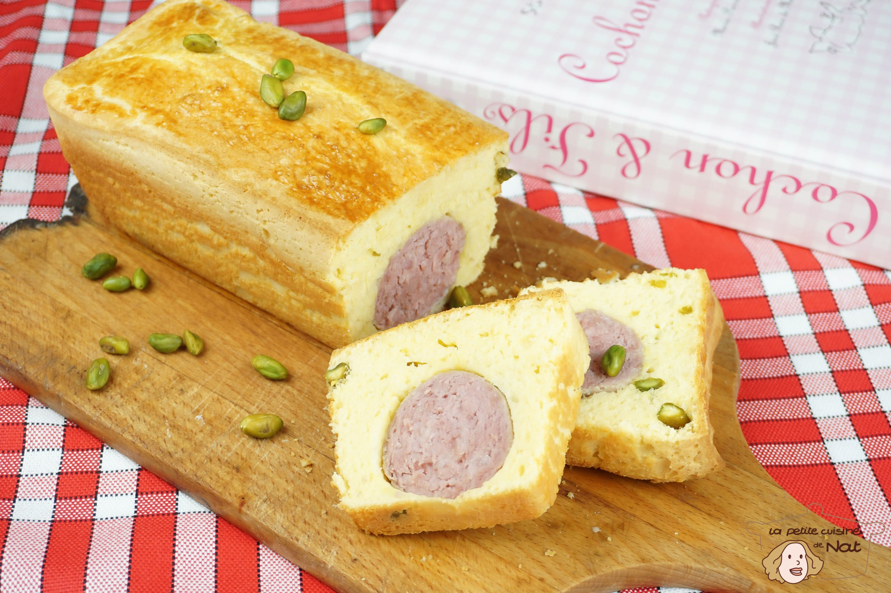

The Best "Saucisson Brioché"
Saucisson brioché is the perfect combination of indulgence and tradition from Lyon. Imagine a tender, flavorful cooked sausage, delicately wrapped in a golden, fluffy brioche. Both soft and crispy, it can be enjoyed warm or slightly cooled, making it an ideal dish for a convivial meal or an elegant starter. A true delight for lovers of authentic flavors!
Ingredients (6 people)
- 200g of flour.
- 1 "Saucisson à cuire" (cooking sausage).
- 3 eggs.
- 15 cl of thick fresh cream.
- 1 sachet of baking powder.
- salt.
Steps
- Preheat the oven to Gas Mark 5 (150°C).
- Beat the eggs with 2 pinches of salt. Add the glass of cream and mix well. Stir in the flour mixed with the baking powder.
- Butter or line a loaf pan (with parchment paper), place a third of the batter in the pan, place the sausage on top (do not pierce it with a fork or the fat will escape!), then cover with the remaining batter.
- Bake at Gas Mark 5 for 40 minutes.
Home